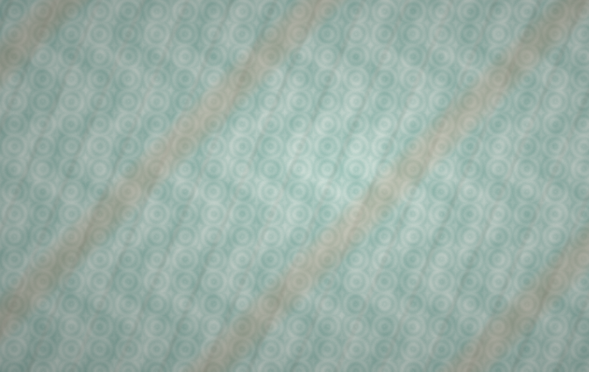
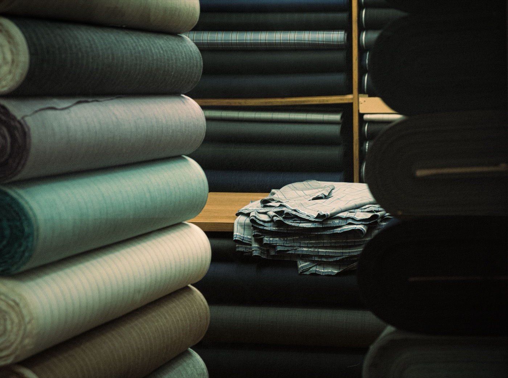
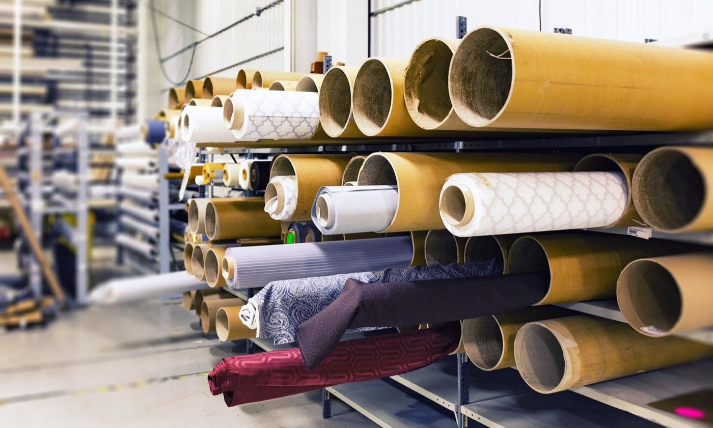

188-320gsm summer T-shirt, kidswear and base-layer fabrics.

For overseas streetwear brands and garment factories
China knit fabric sourcing for streetwear brands
Send us your reference photo, tech pack or garment sample idea. We match plain jersey, double yarn jersey, french terry and stretch jersey in China, then support sample development, quotation and export-ready bulk fabric follow-up.
5 knit fabric series
27 catalog products
Fabric by roll / kg
Custom GSM, yarn count and hand feel by buyer sample
Knit fabric rolls, yardage and kg-based bulk orders
Lab dips, shrinkage checks and export documents for fabric orders
Product lines
Knit fabric product catalog
A local website template adapted from the product catalog deck: 27 selected fabrics across single jersey, sweatshirt, double knit, terry and brushed fleece.
Garment photos are shown as application references. The main business is knit fabric supply: rolls, yardage, lab dips and bulk fabric production.
277-471gsm stable sweatshirt fabrics for sets and casual jackets.
244-449gsm structured fabrics for outer tops and athleisure.
310-482gsm loop-back terry for hoodies, joggers and casual sets.
382-505gsm brushed winter fleece for warmth and soft hand feel.
Guangzhou sourcing support
Fabric matching, sampling and bulk follow-up
Bingo Textile works from Guangzhou's knit fabric supply chain to help overseas streetwear teams compare fabric directions, request swatches, confirm color and hand feel, and follow bulk fabric orders when they cannot visit China in person.
27 catalog fabrics for first screening
3-7 days sourcing direction target
20-35 days common bulk lead-time range



Capability photos are licensed stock references, not direct factory proof. Replace them with real showroom, swatch and packing photos when available.
Reference matching
Review buyer photos, tech packs or sample notes, then suggest fabric structures by GSM, composition, hand feel and target garment use.
Swatches and lab dips
Prepare available swatches first, then arrange lab dips, color matching or hand-feel samples when the project needs custom development.
Specification checks
Confirm practical order details such as fabric width, GSM tolerance, shrinkage target, shade comments, packing method and roll quantity.
Bulk follow-up
Coordinate quotation, sample approval, production updates, packing details and export document preparation for confirmed fabric orders.
Buyer services
What international buyers usually ask for
Color and hand-feel samples
Lab dips, strike-off samples and pre-production samples before bulk production.
Private spec development
Adjust GSM, elastane ratio, yarn count, brushing level and finishing according to style.
Testing support
Prepare shrinkage, color fastness, pilling and composition testing when required.
Repeat order control
Keep shade records, approved sample references and production notes for repeat orders.
Workflow
From inquiry to bulk shipment
- Send requirement Share fabric type, composition, GSM, color, quantity, target price and destination.
- Confirm solution We confirm fabric structure, MOQ, estimated cost, test needs and lead time.
- Approve sample Lab dips, hand-feel samples or pre-production samples are confirmed before bulk.
- Bulk production Production, dyeing, finishing, inspection and packing are tracked against the order.
- Ship and reorder Delivery documents, shipment follow-up and repeat-order records are maintained.
FAQ
Common questions from fabric buyers
What is the usual MOQ?
For custom dyed fabric, a practical starting point is usually 300-500kg per color.
Can you develop from buyer samples?
Yes. Send a physical sample or clear spec sheet. We match structure, GSM and hand feel first.
Do you provide lab dips before bulk?
Yes. Lab dips are recommended for custom colors before arranging bulk dyeing.
Can you support certificates?
Certificate availability depends on fiber, mill and order requirement. Add real certificates here later.
How long does bulk production take?
For ordinary custom colors, 20-35 days after sample and order confirmation is a common reference.
Insights
Fabric guides for Google traffic
Local SEO landing pages for buyers searching fabric directions before they send a reference photo, tech pack or sample request.
Guide
Heavyweight T-shirt fabric
For oversized tees, boxy tops and premium basics using heavier cotton jersey.
Buyer checklist
French terry hoodie fabric
Compare loop-back terry, sweatshirt fleece, GSM and wash direction for hoodies.
Trim fabric
Rib knit fabric
Match cuffs, collars, hems and neckbands by structure, shade and recovery.
Development
Stretch jersey fabric
For fitted tops, kidswear and base layers where recovery matters.
Service
Fabric sample matching
Send photos, tech packs or samples to find a practical China fabric option.
Contact
Send your fabric brief and get sourcing support
Tell Jason Huang what garment you want to develop. Reference photos, tech packs, sample notes and target prices help us match fabric faster.
Company: Bingo Textile
Contact person: Jason Huang
Phone: +86 13827719946
WhatsApp: +86 13827719946
WeChat: 13827719946
Email: 57317996@qq.com
Address: Zhujiang Textile City, Haizhu District, Guangzhou, Guangdong Province, China